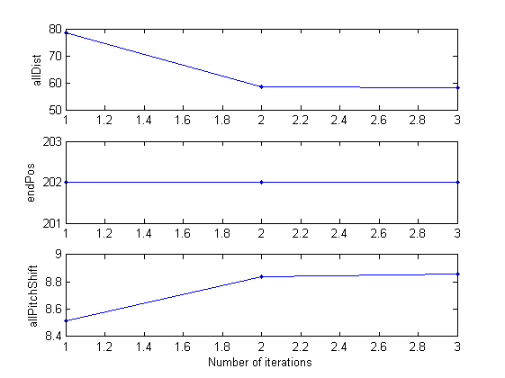
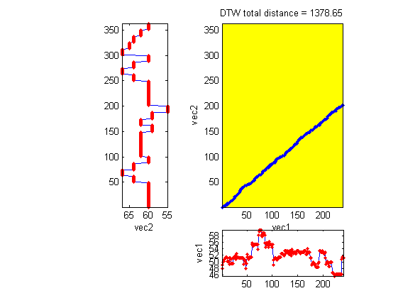

dtwFixedPoint
Use of Picard iteration to find the optimal pitch shift for DTW
Contents
Syntax
- minDist=dtwFixedPoint(inputPitch, dbPitch)
- minDist=dtwFixedPoint(inputPitch, dbPitch, opt)
- minDist=dtwFixedPoint(inputPitch, dbPitch, opt, plotOpt)
- [minDist, allDist, allPitchShift]=dtwFixedPoint(...)
Description
minDist=dtwFixedPoint(inputPitch, dbPitch, opt, plotOpt) returns the DTW distance which allows key transposition.
- A typical example of opt is
- opt.dtwFunc='dtw1mex';
- opt.anchorBeginning=1;
- opt.anchorEnd=0;
- opt.maxIterationNum=20;
- allDist(i) is obtained as the DTW distance between inputPitch+allPitchShift(i) and dbPitch.
This function is used to find the optimum translation between two vectors when computing their DTW distance.
Example
inputPitch: input pitch vector
inputPitch=[48.044247 48.917323 49.836778 50.154445 50.478049 50.807818 51.143991 51.486821 51.486821 51.486821 51.143991 50.154445 50.154445 50.154445 49.218415 51.143991 51.143991 50.807818 49.524836 49.524836 49.524836 49.524836 51.143991 51.143991 51.143991 51.486821 51.836577 50.807818 51.143991 52.558029 51.486821 51.486821 51.486821 51.143991 51.143991 51.143991 51.143991 51.143991 51.143991 51.143991 51.143991 51.143991 49.218415 50.807818 50.807818 50.154445 50.478049 48.044247 49.524836 52.193545 51.486821 51.486821 51.143991 50.807818 51.486821 51.486821 51.486821 51.486821 51.486821 55.788268 55.349958 54.922471 54.922471 55.349958 55.349958 55.349958 55.349958 55.349958 55.349958 55.349958 55.349958 53.699915 58.163541 59.213095 59.762739 59.762739 59.762739 59.762739 58.163541 57.661699 58.163541 58.680365 58.680365 58.680365 58.163541 55.788268 54.505286 55.349958 55.788268 55.788268 55.788268 54.922471 54.505286 56.237965 55.349958 55.349958 55.349958 55.349958 54.505286 54.505286 55.349958 48.917323 50.478049 50.807818 51.143991 51.143991 51.143991 50.807818 50.807818 50.478049 50.807818 51.486821 51.486821 51.486821 51.486821 51.486821 51.486821 52.558029 52.558029 52.558029 52.558029 52.193545 51.836577 52.193545 53.310858 53.310858 53.310858 52.930351 52.930351 53.310858 52.930351 52.558029 52.193545 52.930351 53.310858 52.930351 51.836577 52.558029 53.699915 52.930351 52.930351 52.558029 52.930351 52.930351 52.558029 52.558029 52.558029 53.310858 53.310858 53.310858 53.310858 52.930351 52.930351 52.930351 52.558029 52.930351 52.930351 52.930351 52.930351 52.930351 52.930351 52.930351 53.310858 53.310858 53.310858 52.193545 52.193545 52.193545 54.097918 52.930351 52.930351 52.930351 52.930351 52.930351 51.143991 51.143991 51.143991 48.917323 49.524836 49.524836 49.836778 49.524836 48.917323 49.524836 49.218415 48.330408 48.330408 48.330408 48.330408 48.330408 49.524836 49.836778 53.310858 53.310858 53.310858 52.930351 52.930351 52.930351 53.310858 52.930351 52.930351 52.558029 52.558029 51.143991 52.930351 49.218415 49.836778 50.154445 49.836778 49.524836 48.621378 48.621378 48.621378 49.836778 49.836778 49.836778 49.836778 46.680365 46.680365 46.680365 46.163541 45.661699 45.661699 45.910801 46.163541 46.163541 46.163541 46.163541 46.163541 46.163541 46.163541 46.163541 46.163541 46.163541 46.163541 46.163541 50.807818 51.486821 51.486821 51.143991];
% dbPitch: database pitch vector
dbPitch =[60 60 60 60 60 60 60 60 60 60 60 60 60 60 60 60 60 60 60 60 60 60 60 60 60 60 60 60 60 60 60 60 60 60 60 60 60 60 60 60 60 60 60 60 60 60 60 60 60 64 64 64 64 64 64 64 64 64 64 64 64 64 67 67 67 67 67 67 67 67 67 67 67 67 64 64 64 64 64 64 64 64 64 64 64 64 64 60 60 60 60 60 60 60 60 60 60 60 60 60 62 62 62 62 62 62 62 62 62 62 62 62 62 62 62 62 62 62 62 62 62 62 62 62 62 62 62 62 62 62 62 62 62 62 62 62 62 62 62 62 62 62 62 62 62 62 62 62 62 59 59 59 59 59 59 59 59 59 59 59 59 59 62 62 62 62 62 62 62 62 62 62 62 62 59 59 59 59 59 59 59 59 59 59 59 59 59 55 55 55 55 55 55 55 55 55 55 55 55 55 60 60 60 60 60 60 60 60 60 60 60 60 60 60 60 60 60 60 60 60 60 60 60 60 60 60 60 60 60 60 60 60 60 60 60 60 60 60 60 60 60 60 60 60 60 60 60 60 60 64 64 64 64 64 64 64 64 64 64 64 64 64 67 67 67 67 67 67 67 67 67 67 67 67 64 64 64 64 64 64 64 64 64 64 64 64 64 60 60 60 60 60 60 60 60 60 60 60 60 60 67 67 67 67 67 67 67 67 67 67 67 67 65 65 65 65 65 65 65 65 65 65 65 65 65 64 64 64 64 64 64 64 64 64 64 64 64 62 62 62 62 62 62 62 62 62 62 62 62 62 60 60 60 60 60 60 60 60 60 60 60 60 60];
[minDist, allDist, allPitchShift]=dtwFixedPoint(inputPitch, dbPitch, [], 1);
Min. DTW distance = 58.117518 Optimum pitch shift = 8.856009 